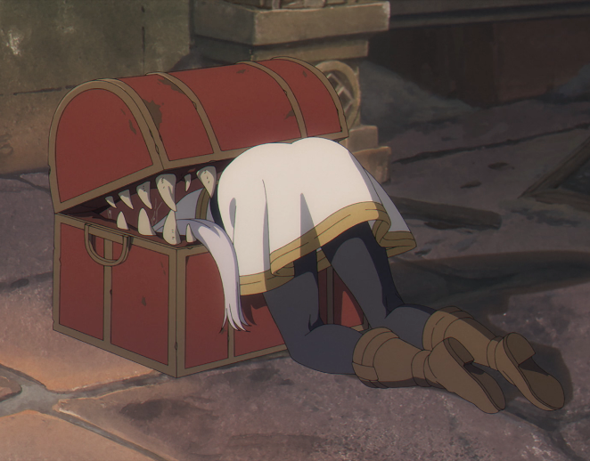

Personagens
 |
Frieren
Eu normalmente não gosto dos protagonistas, mas com ela foi diferente. |
 |
Fern
Ela é aprendiz da Frieren que possui alta capacidade mágica e um puta de um potencial. |
 |
Übel
Ela é foda, tava ela num teste que para passar dele precisava dar algum dano a um mago |
 |
Kanne e Lawine
Elas são incriveis, são aquela dupla de "amigas" que brigam toda hora, criando cenas |
 |
EisenEle é simplesmente foda. |